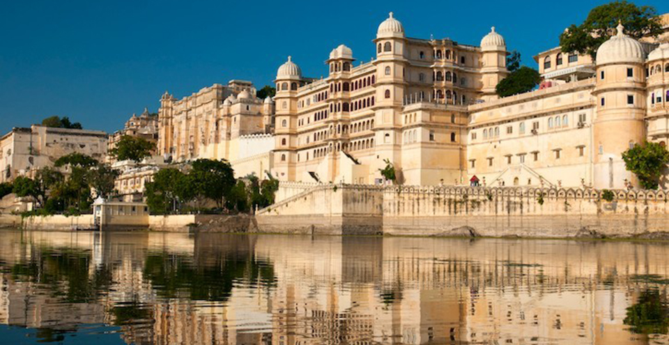
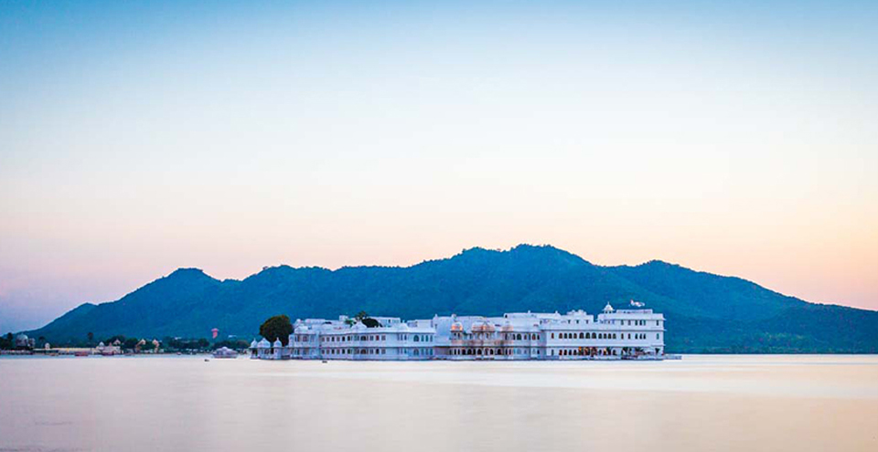

Udaipur
Udaipur
CITY OF Lake AND PALACE
Often referred to as the 'Venice of the East', the city of lakes Udaipur is located around azure water lakes and is hemmed in by lush green hills of Aravallis. The famous Lake Palace, located in the middle of Lake Pichola is one of the most beautiful sights of Udaipur. It is also home to Jaisamand Lake, claimed to be the second largest man-made sweet water lake in Asia. The beautiful City Palace and Sajjangarh (Monsoon Palace) add to the architectural beauty and grandeur of the city. The city is also known for its profusion of zinc and marble. Solar observatory in Lake Fateh Sagar is the only observatory in India located on an island and has been made on the pattern of Big Bear Lake in Southern California. The ten-day Shilpgram Festival which starts from 21 Dec to 30 Dec pulls in a large number of people interested in arts and crafts.
CENTER OF ATTRACTIONS
-

UDAIPUR PRATAP MEMORIAL
An impressive bronze statue of Maharana Pratap on his favourite horse Chetak, stands atop the Moti Magri overlooking Fateh Sagar. Local people climb up the hill to pay homage to Rana Pratap and his faithful charger 'Chetak' who was fiercely protective about its master and stood by him till its last breath. This loyal steed sacrificed its life while carrying his master to safety from the battlefield of Haldighati.
-

LAKE PALACE
Now a hotel but was originally called Jagniwas and served as a summer palace. Built between 1743 and 1746 on the island near Jagmandir in Lake Pichola, the palace, which faces east, is a wondrous sight to behold. The walls made of black and white marbles are adorned with semi-precious stones and ornamented niches. Gardens, fountains, pillared terraces, and columns line its courtyards.
-
LAKE PICHOLA
Picholi was the name of a village that lent its name to the lake. The islands of Jagniwas and Jagmandir are housed in this lake. Along the eastern banks of the lake lies the City Palace. A boat ride in the lake around sunset offers a breathtaking view of the Lake and City Palace.
-
BHARTIYA LOKDAL KALA MANDAL
Dedicated to the study of folk art, culture, songs and festivals of Rajasthan, Gujrat and Madhya Pradesh, Bharatiya Lok Kala Mandal is a cultural institution in Udaipur. Besides propagating folk culture, it also houses a museum that exhibits various artefacts of Rajasthani culture
EXPERIENCES
Posted on June 18, 2013 by sudhagee
Udaipur was my last stop as part of a 10-day trip of Rajasthan that took me through sandy Bikaner and Jaisalmer, arid and rocky Jodhpur, and mountainous Kumbhalgarh. And when I arrived in the cool, green lake city of Udaipur, I was in for a bit of a shock. A pleasant shock, I must hasten to clarify. Part of the shock was how different it was from the image that comes to mind when one imagines Rajasthan, and part of the reason was how much Udaipur looked like the pictures I had seen of the city. 🙂 I spent a couple of days exploring Udaipur, wandering in the alleyways of its old city, touring the famous City Palace on the banks of the Lake Pichola, visiting memorials and gardens, stuffing myself with sweets, picking souvenirs and bandhini dupattas, going on boat rides… Presenting some images from my wanderings in Udaipur🙂
I just wanted to grab some cushions and curl up with some books and a cool drink in this little nook at the Saheliyon ki Bari

Sunrise at Hanuman Ghat
A vintage car, reportedly belonging to a member of Udaipur’s royal family, parked at the City Palace